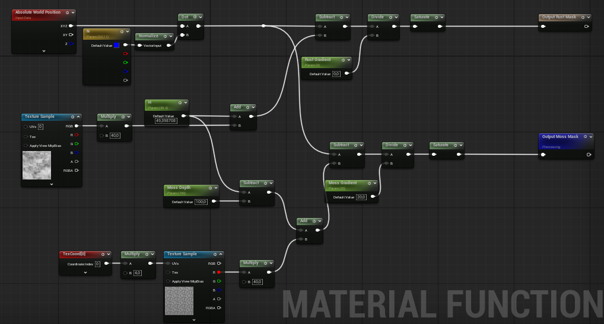

Environment Art
Procedural Rust
Project Overview
This project showcases the creation of realistic procedural rust materials using Unreal Engine and Substance Designer. The materials dynamically respond to surface depth, allowing rust and moss to accumulate naturally in low-lying areas.
Main preview
Tank mesh - Render pass visualization
Car mesh - full rust and moss blend
Showcase of dynamic rust and moss - both meshes in scene
Technical Approach
This project uses signed distance field techniques which allow for a dynamic rust and moss layer height based on the depth of the surface.
- Blueprint system to manage and update SDF values for material parameters
- Material Function for reusable shader logic shared across all meshes
- Separate material layers for Base, Rust, and Moss - blended by SDF depth
- Material Instances per mesh for per-object tuning

Shared material function - Plane SDF depth logic with parameters to control fall-off and moss depth

The use of the custom material function used with unreal engine's material blending
Artistic Approach
Substance Designer was used to create the base textures for the rust material
In order to achieve a realistic look, I followed a reference-based approach, studying real-world rust and moss colours to guide texture creation process. This was done with the help of Grzegorz Baran's study (Color Calibration For PBR Materials, 2025)
Shared material function
A material function is used to encapsulate core SDF calculations and parameters for reuse across different materials.
Material instance preview
This is a look in to how the user can tweak the material parameters in real-time in order to achieve the desired visual outcome.
Key Learnings
This project taught me about the use of blueprints to manage shader parameters in order to create dynamic and visually rich materials. It also deepened my understanding of signed distance field techniques and how they can be used to create procedural effects that respond to surface geometry. Overall, this project was a valuable learning experience in both technical shader development and artistic material creation.
If I had more time, I would have liked to explore additional procedural techniques for creating more complex weathering effects and further optimize the material system for better performance.